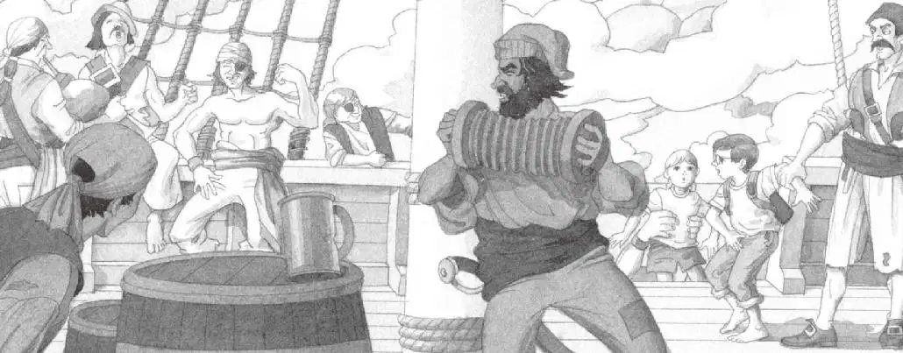
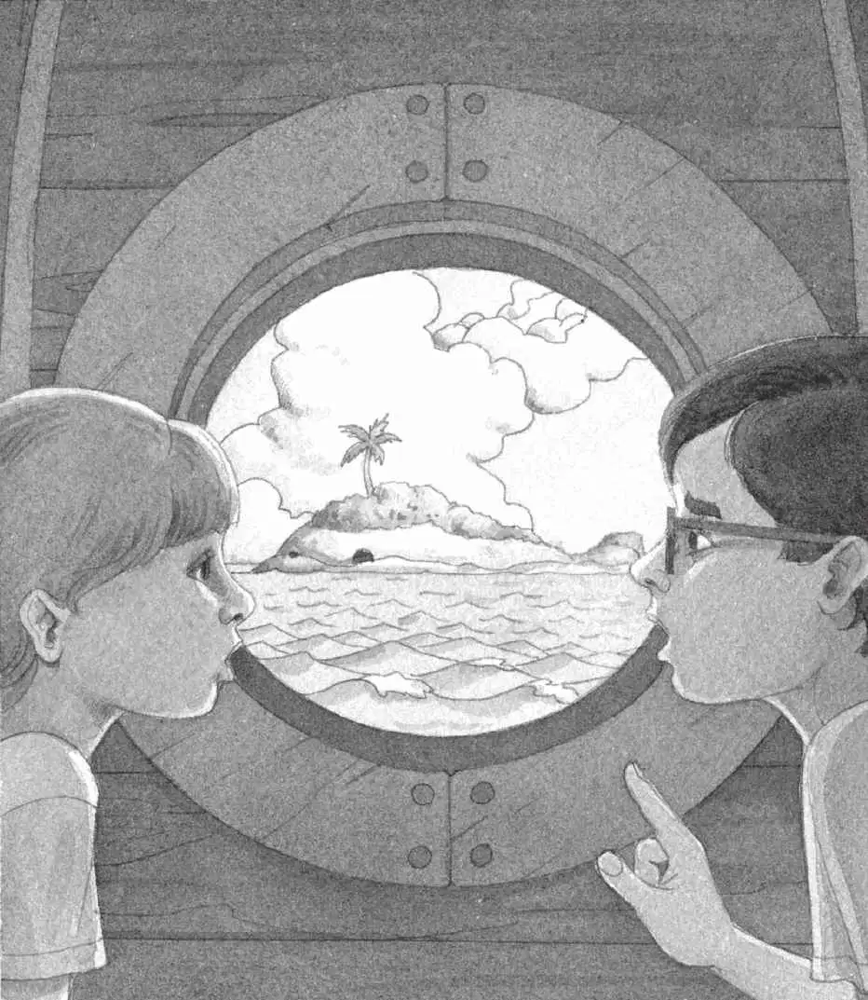

小艇剧烈地左右摇晃。浪太大了，溅起无数的水花。咸咸的海水刺痛了杰克的眼睛，他有种晕船的感觉。
“抓牢了！”骷髅船长喊道，“不然我们就会成为那些鲨鱼嘴里的美餐。”
他指着海面，那里突然冒出一片黑色的鱼鳍。
一条鲨鱼赫然出现在船边。
杰克不禁打了个寒战，因为他只要一伸手就能摸到那条鲨鱼。
不一会儿，小艇就划到了大船旁边。
空气里传来欢快的小提琴声和风笛声。
但很快，一阵讥笑声、喊叫声和刺耳难听的大笑声就把那美妙的音乐掩盖了。
“把他们拖上船去！”骷髅船长命令手下的人。
安妮和杰克被拖到了大船甲板上。
大船吱吱呀呀地呻吟着，忽而倾向这边，忽而倾向那边。
绳索在呼啸的狂风中颤动，发出啪啪的声响。
杰克和安妮不管往哪儿看，看见的都是海盗。
这些海盗有的在跳舞，有的在喝酒，还有的在用剑或拳头打架。
“把他们锁在我的船舱里！”骷髅船长粗声吩咐道。
两个海盗抓起杰克和安妮，把他们扔进大船的船舱，然后锁上了舱门。
船舱里的空气闷热潮湿，有一股难闻的酸臭味儿。一道昏暗的亮光透过一个圆圆的小窗户射进来。
“哦，天哪！”杰克说，“我们得想办法回到岛上。”
“那样我们就能钻进树屋，回家去了。”安妮说。
“嗯。”杰克回答。
杰克突然感到非常疲倦，他们怎样才能从这个困境里逃脱出去呢？
“我们最好再看看那本书。”杰克说着从背包里抽出海盗书。
他打开书，一页页迅速地翻着，努力寻找有用的信息。
“看，这个可能会有帮助。”杰克指着一幅图片说。

在那幅图片上，海盗们正在埋一个藏宝箱。杰克和安妮一起把图片下面的文字读了出来：
基德船长是一个大名鼎鼎的海盗。
据说，他把一个藏宝箱埋在了一座荒岛上。
箱子里装满了金银财宝。
“基德船长！”杰克惊呼。
“原来这就是骷髅船长口口声声提到的那个‘鸡的’啊！”安妮说。
“没错。”杰克答道。
安妮望向窗外。
“基德船长的宝藏，应该就埋在那座岛上的什么地方。”她推测道。
杰克拿出笔记本和铅笔，写道：
“杰克。”安妮叫道。
“嘘，等一下。”杰克说，“我在思考。”
“你猜我看见了什么？”安妮说。
“什么？”杰克说着低下头去看书。
“一头鲸。”安妮说。
“哦，知道了。”杰克突然想到了什么，连忙抬起头问，“一头鲸？你是说……一头鲸？”
“对，一头鲸，一头特别大的鲸，有一个足球场那么大。”安妮说。
杰克一下子跳了起来，和安妮一起望向窗外。
“在哪儿？”杰克问。他只看见小岛、大海和闪动的鲨鱼鳍。

“在那儿！”安妮说。
“哪儿？哪儿？”杰克问。
“看那儿！那座岛的形状就像是一头大鲸！”安妮道。
“哦，天哪。”杰克轻声说。
他也看出来了。
“看见鲸背了吗？”安妮问。
“看见了。”杰克说。
岛上的斜坡看上去就像鲸的背。
“看见它喷出的水柱了吗？”安妮问。
“看见了。”杰克说。
树屋所在的那棵棕榈树，看上去就像鲸喷出的水柱。
“看见它的眼睛了吗？”安妮问。
“看见了。”杰克说。
一块黑乎乎的大岩石，看上去就像鲸的眼睛。
“金子就藏在鲸的眼睛下面。”杰克恍然大悟，轻声说，“太好了。”